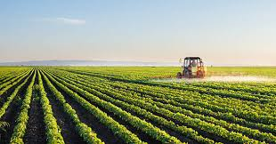
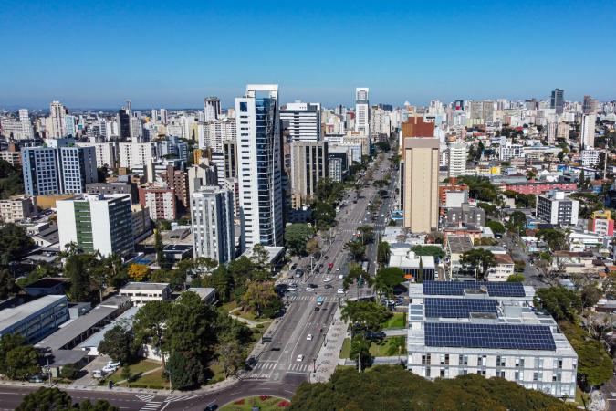
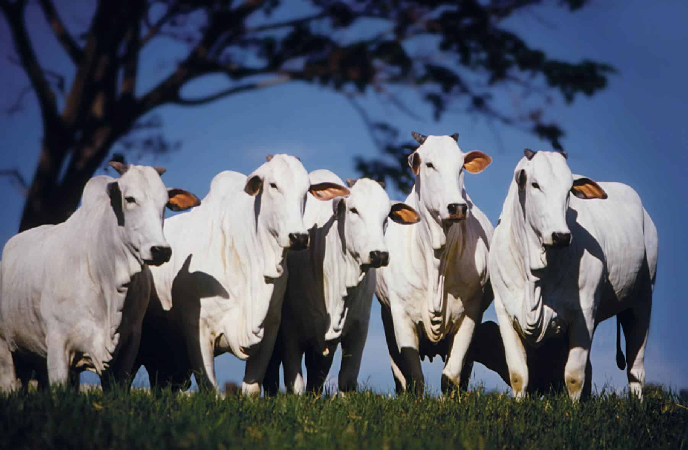

Sobre o Projeto
Este projeto celebra a importância da conexão entre o campo e a cidade, destacando como ambos se complementam através da cultura, economia, educação e alimentação.
Benefícios da Conexão
- Valorização da agricultura e dos pequenos produtores
- Acesso da cidade a alimentos frescos e saudáveis
- Troca de conhecimentos e inovações tecnológicas
- Promoção de eventos culturais conjuntos
Imagens da União


